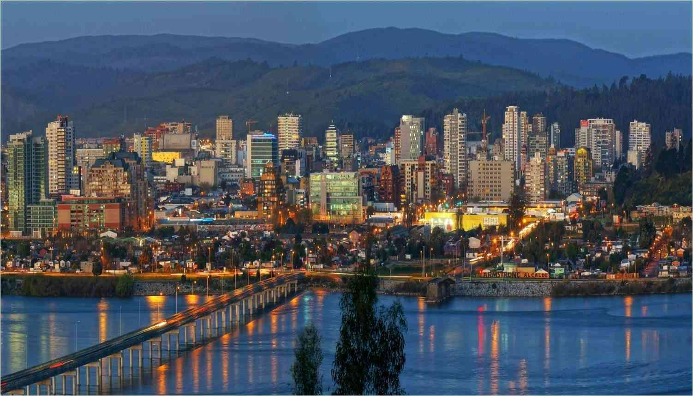

Carolina Valdés | WWD 130
My name is Carolina Valdés. I live in Concepción, a city in south-central Chile. It's a beautiful place surrounded by forests, rivers, and very close to the ocean. I work at a radio station as a classical music programmer. I live with my father and younger sister. We are very close, and we share a love for board games, watching movies, and going for walks. I have a cat named Amadeus and a dog named Donna.
Concepción, Chile

Concepción is a city located in south-central Chile, approximately 450 km south of Santiago. It is the most important urban center of the Concepción Metropolitan Area and the capital of the Biobío Region. Due to its strategic location and high level of industrialization, it has a significant impact on national trade. It borders several municipalities, including Talcahuano, Chiguayante, and San Pedro de la Paz, and is part of one of the most populated conurbations in the country. Its history begins in 1550 with its founding by Pedro de Valdivia, and it was the capital of the Kingdom of Chile during the colonial period. The name "Penquista" comes from its original location in the current municipality of Penco.